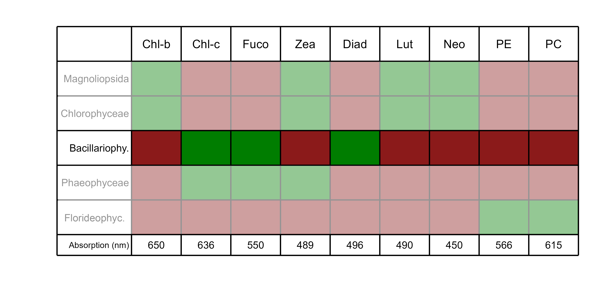
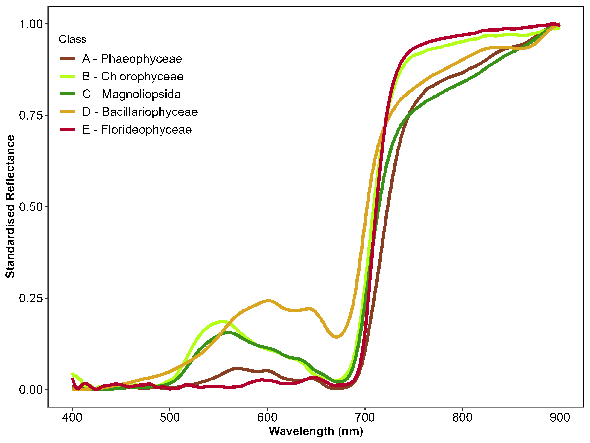
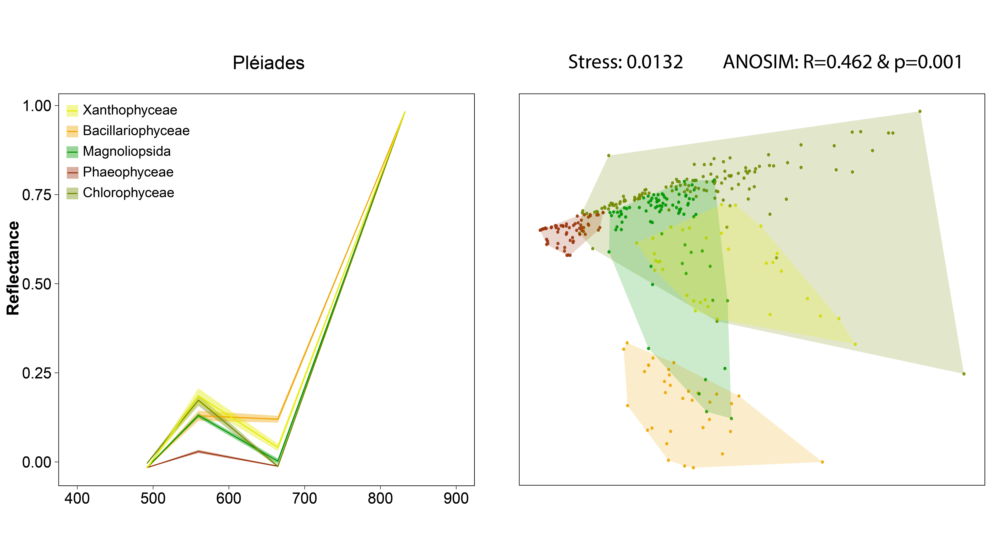
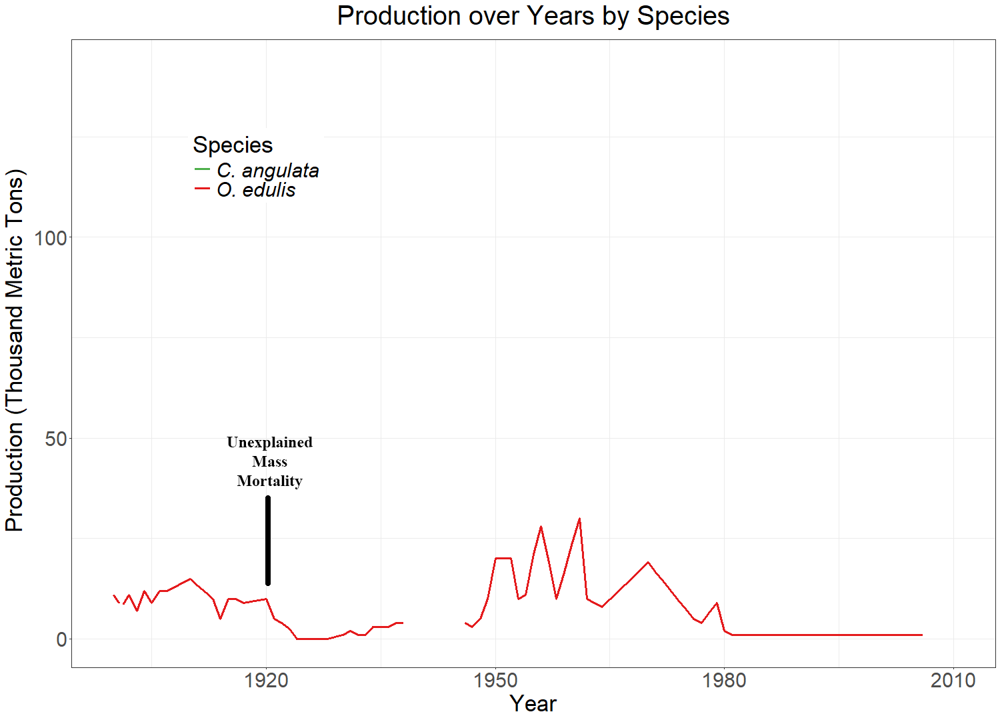
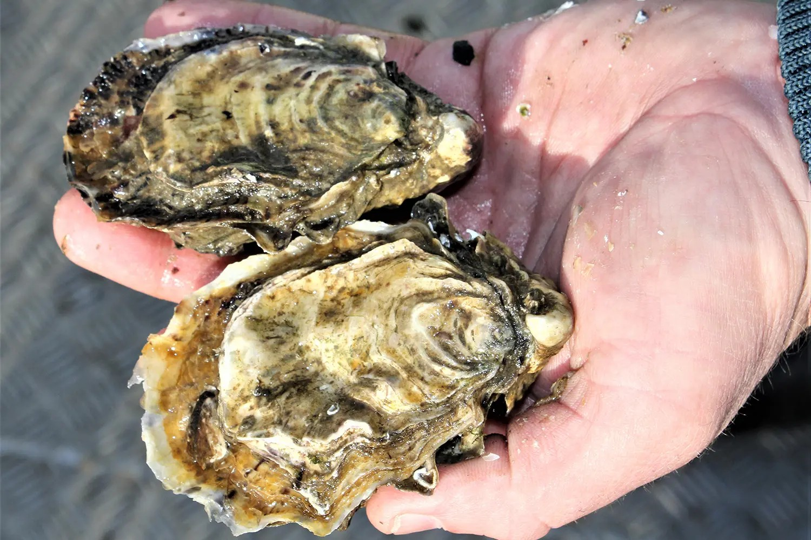

Preface

Remote Sensing, Benthic Ecology and Ecotoxicology

- Benthic ecology and shellfish aquaculture
- Biodiversity of benthic primary producers
- Hyperspectral, multispectral and drone remote sensing
- Ecotoxicology and emerging pollutants
- Marine optics and ocean colour remote sensing

PhD related projects


BiCOME Project
2021-2024
- Develop Observation tools
- Assess impacts of land/sea use, pollution and climate change
- identify regions of resilience or sensitivity
Project funded by:


REWRITE Project
2024-Actual
Aims to revitalize Europe’s intertidal areas through rewilding, promoting climate resilience, biodiversity, and societal benefits along the European shoreline.
Project funded by:

InvaSea Project
2024-Actual
- Assessing the Capacity of Remote Sensing to Map Invasive Red Algae
- Mapping G. vermiculophylla along the French coastline
Project funded by:
Coastal Environments
Areas where the land masses meet the seas

- Directly in contact with the sea
- 25km away from the sea
- 50km away from the sea
- French Coast are densly populated:
- 4% of the french territory
- 10% of the french population
- Globaly:
Source: Cosby et al. (2024) , Reimann et al., (2023)
1 billion people (15%) within 10km (4%)
~3 billion by 2100
Human activities
Hotspots of Economic Growth


Seaport
Dredging
Aquaculture
Energy Production
Artificialization
- Fishing activities
- Tourism
- Industries
- …
Environmental Impacts
The mark of human activity on nature


Oil spills
Erosion
Alien Species Introduction
Energy introduction
Habitat destruction
- Fishing activities
- Pollutions
- …
Intertidal habitats
Living on the edge of land and sea


Saltmarshes
Mangroves
Polychaete reefs
Rocky reefs
Tidal flats
Oyster reefs
A rich variety of intertidal habitats
Soft-bottom substrats
Guadalquivir River, Spain
- A - Magnoliopsida
- B - Bacillariophyceae
- C - Phaeophyceae
- D - Florideophyceae
- E - Chlorophyceae
Five Taxonomic Classes
of Vegetation
Hard-bottom substrats
Vigo, Spain


Saja estuary, Spain
Ecosystem Services
- Protection against Erosion
- Carbon fixation
- Nursery & Shelter
- Nutrient Fixation
~ $30 trillion per year
Protect these ecosystems:
- Habitat Directive (1992)
- Water framework Directive (2001)
- Marine Strategy Framework Directive (2008)
- Birds Directive (2009)
- Nature Restoration Law (2024)

Good knowledge and monitoring to inform policies

Remote Sensing
A tool to map them all !
Traditional sampling methods:
- Expensive
- Time consuming
- Low extent and temporal resolution
- Hard to access
Remote Sensing:
- Cost effective
- Good coverage/Time ratio
- Synchronous broad-scale view
- Simplifies the field work
From the sky to the sea
The science of obtaining information about objects or areas from a distance

Applyed to Earth Observation:


Remote Sensing
From the sky to the sea
Sentinel-2
Drone
10–20 m resolution
100 000 km²/image
5-day revisit
cm resolution
Adapted to small-scale studies
Flight planning flexibility
Fieldwork remains essential to make sense of what satellites see
Radiometric calibration
Aven, France
Ground truthing
Noirmoutier, France

Features georeferencing
Tainaron, Greece

Sampling
Cadiz, Spain

Monitoring coastal change from space
Coastal Remote Sensing: A trendy topic !


- Standardized measurements or indicators to monitor biodiversity
- Adapted for remote sensing applications

Challenges to map intertidal vegetation
Introduction to Spectroradiometry

\[R(\lambda) = \frac{L_{\text{up}}(\lambda)}{L_{\text{down}}(\lambda)}\]
- \(\lambda\) is the Wavelenght
- \(L_{\text{up}}\) is the upwelling radiance
- \(L_{\text{down}}\) is the downwelling radiance


\[R_i^*(\lambda) = \frac{R_i(\lambda) - \min(R_i)}{\max(R_i) - \min(R_i)}\]
- \(R_i(\lambda)\) is the reflectance the the wavelength \(\lambda\) of the spectrum \(R_i\)
- \(min(R_i)\) and \(max(R_i)\) are the minimum and maxium reflectance of the spectrum \(R_i\)
- Each spectrum is between 0 and 1







ASD FieldSpec Handheld 2
Hyperspectral Sensor
A lot of Narrow Spectral Bands

- Is is possible to discriminate green macrophytes using remote sensing techniques ?
- What is the impact of the spectral resolution on the discrimination accuracy ?
Material & Methods

Building a Spectral library of intertidal vegetation

Total of 332 Spectra of 5 taxonomic classes
2 instruments
- GER 3700 and ASD Fieldspec handheld 2
Calibration
- Optimisation of the integration time
- Dark noise calibration
- Measurement of Radiance with a 99% Spectralon white reference
Sampling method
- Operator angled at 90° to the sun
- At least 10 replicate for each sample
- 30 to 50cm from the ground
- Field of view of the instrument set to ~ 3.5°
\(R(\lambda)_{\rm sample} = \frac{1}{n}\sum_{i=1}^{n}R_i(\lambda), \quad\text{with }n \ge 10\)
Spectral degradation


ASD
PRISMA
Drone
S2 - 20m
Pléiades
S2 - 10m
500 bands
50 Bands
10 Bands
8 Bands
4 Bands
4 Bands
Spectral comparisons
Compare the Spectra:
- nMDS + ANOSIM for each spectral resolution
Compare the Sensors:
- Supervised Machine Learning Classifiers
- Random Forest
- XGBoost
- SVM
- …

- Random Forest
Spliting of the dataset:
- 75 % for training
- 25 % for testing
Tuning of hyperparameters:
- Maximisation of the AUC-ROC
Validation:
- Accuracy metrics
- Variable Importance
Putting theory into practice
DJI Matrice 200

Micasense RedEdge-MX Dual


Sentinel-2: 100 pixels/hectar
Drone 120 m: ~1 500 000 pixels/hectar
Drone 12 m: ~15 000 000 pixels/hectar
50% Spectralon
Downwelling Light Sensor


Results
Hyperspectral library
Hyperspectral library - nMDS
Hyperspectral library - Random Forest Classifier




- Global accuracy: 0.95
- Cohen’s kappa: 0.93
- Sensitivity: 0.93
- Specificity: 0.98
- Global accuracy: 0.94
- Cohen’s kappa: 0.93
- Sensitivity: 0.94
- Specificity: 0.98

- Global accuracy: 0.83
- Cohen’s kappa: 0.79
- Sensitivity: 0.84
- Specificity: 0.96
Drone imagery - Example of classification


Chlorophyceae

Bacillariophyceae
Magnoliopsida
Florideophyceae
Chlorophyceae

Bacillariophyceae

Magnoliopsida

Florideophyceae
Drone imagery - Validation
Drone imagery - Variable importance

Discussion
Pigment Composition, Spectral Signature and Variable Importance
Similar pigment composition,…
- … but difference in carotenoid to chlorophyll-a ratios (Repolho et al., 2017)
Distinction between green macrophyte possible, …
- … and ~530 nm & ~650 nm are key wavelengths
Green macrophytes often co-occurs in intertidal areas…
- Ultra high spatial resolution (from 80 to 8mm per pixel)
Green macrophytes often co-occurs in intertidal areas…
- Ultra high spatial resolution (from 80 to 8mm per pixel)
- Easy Photo-interpretation of pixels
- More then 1 000 000 training pixels. Over 11 sites of 3 country
- Diverse training dataset
Drone: 0,26 ha ~ 2.5 millions pixels
S2: 25 000 hectares ~ 2.5x Paris


 {style=“transform: rotate(45deg); height=”2000”}
{style=“transform: rotate(45deg); height=”2000”}
Bourgneuf Bay, July 2024
Ecological Context & Significance
History of the aquaculture of the oyster in Europe
Flat Oyster



Portuguese Oyster

Pacific Oyster


A Hidden Passenger
- Originated from Japan
- 10 000 T spat were imported between 1971 and 1973
- Originated from Japan
- Transport of fragment of Gracilaria vermiculophylla
Resilient to:
- Salinity changes
- Dessication
- Eutrophic conditions
- Can attach to shells, rocks or colonize soft bottom areas
Well adapted to European estuaries
Gracilaria vermiculophylla

The transport of acquaculture structures between cultivation sites favorised its spread across the World
The transport of acquaculture structures between cultivation sites favorised its spread across Europe
First observation in Europe in the Belon, Brittany, in 1996
Belon Estuary, France, 2024
Aveiro, Portugal, 2021
Etel, France, 2024
Auray, France, 2024

Scorff, France, 2024
Saja estuary, Spain, 2024
Source: Mendoza-Segura et al., 2023

source: Buestel et al., 2009

Ecological Impacts of the invasion
Negatives:
- Can affect native Fucoids and Seagrasses
- Alter the sediment composition and structure
- Modify or disrupt trophic interactions
Positives:
- Create new habitats
- Stabilize the Sediment
Monitoring and Managing
Remote Sensing as a tool to follow the invasion
Satellite:
- Follow the invasion over time
- Go back in time
Drone:
- Flexibility to monitor the early stages of the invasion
- Offer an ultra high resolution